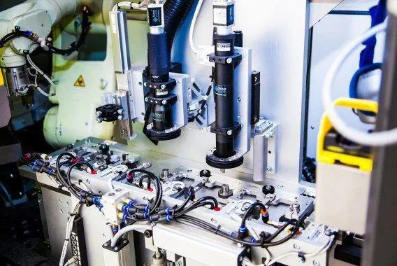

Multi-Station Vision Inspection System

Vision inspection station with multiple camera views
Overview
Impact: Built production vision system for $8M biodegradable packaging line with 40+ cameras across 6 stations operating at 0.6s cycle time
As an intern, I was tasked with developing the first large-scale vision inspection system ever built by the department. With no internal templates or previous examples to reference, I learned C# from scratch and designed a multithreaded architecture that became the department's blueprint for future vision systems.
The system now runs reliably in production, validating product quality across an entire manufacturing line with surgical-grade precision.
The Challenge
This project presented several unique challenges:
- First of Its Kind: No internal templates, no previous examples—had to architect from scratch
- Learning Curve: Had to learn C# while simultaneously designing and building the system
- Scale & Performance: 40+ cameras across 6 stations with sub-second cycle time requirements
- Real-Time Coordination: Synchronize with Siemens PLCs using ProfiNet fieldbus communication
- Production Reliability: System must run 24/7 in manufacturing environment with automatic recovery from failures
Technical Architecture
System Design
Built a single unified C# application using multithreaded WPF architecture to manage all 6 inspection stations:
- Camera Integration: 4-12 cameras per station (40+ total) using HALCON vision library
- Asynchronous Pipeline: Parallel image acquisition and processing to meet 0.6s cycle time
- PLC Communication: Designed handshake protocol for ProfiNet communication with Siemens PLCs
- Data Persistence: SQL Server Express logging for complete product traceability
- Configuration Management: Config files to manage per-station differences from single codebase
Development Process
Built incrementally to manage complexity and validate each subsystem:
- Dummy test harness for development without hardware dependencies
- Camera interfaces with basic image acquisition
- Vision inspection algorithms using HALCON
- SQL logging system for traceability
- PLC integration with custom C# wrapper for Hilscher cifX fieldbus card
- Final integration and performance optimization
Custom Fieldbus Integration
Wrote C# wrapper for Hilscher cifX fieldbus card to enable ProfiNet communication:
- Sketched handshake sequences in flowcharts before coding
- Collaborated with automation engineers to refine communication protocols
- Implemented robust error handling and reconnect logic
Technical Decisions & Problem Solving
Architecture Redesign
Early multithreading design suffered from race conditions that caused intermittent failures. This required a complete architecture redesign to properly isolate shared resources and implement thread-safe communication patterns.
Unified vs Split Architecture
Initially split the system into separate GUI and inspection applications, but this limited operator adjustability. I redesigned to a unified interface that allowed operators to modify inspection parameters on the fly while maintaining the separation of concerns in the code structure.
Performance Optimization
When two stations failed to meet strict cycle time requirements, I refactored major code sections to:
- Optimize image processing pipelines using HALCON's parallel processing capabilities
- Reduce memory allocations in tight loops
- Implement asynchronous I/O for camera and PLC communication
- Profile and eliminate bottlenecks in the inspection algorithms
Network Configuration
Resolved complex networking issues that plagued early testing:
- Managed multiple NICs for camera and PLC networks
- Configured DHCP settings to prevent IP conflicts
- Diagnosed and resolved packet collisions causing dropped frames
- Implemented automatic reconnection logic for cameras and fieldbus devices
Mid-Project Feature Addition
When the customer requested SQL logging mid-project, I designed and integrated a complete traceability system without disrupting the existing architecture or delaying the delivery schedule.
Results & Impact
✅ Production Deployment
System running reliably in 24/7 manufacturing environment
📐 Department Blueprint
Architecture became template for future vision systems
🔄 Code Reuse
Classes and patterns reused by other engineers
⚡ 0.6s Cycle Time
Achieved sub-second inspection across 40+ cameras
Customer Demonstration
Successfully demonstrated the live system to the customer in a workshop environment, showing real-time inspection capabilities and the operator interface. The demonstration built customer confidence in the solution and validated the technical approach.
Technical Legacy
As an intern, delivered a complex, customer-critical system that:
- Established design patterns for multithreaded vision systems in the department
- Created reusable components for camera integration, PLC communication, and data logging
- Demonstrated that structured software engineering practices could be applied to industrial automation
- Proved that rapid learning combined with systematic development could deliver production-grade systems
Key Takeaways
- Learn by Building: Mastered C# and .NET by tackling a real production system with clear requirements and deadlines
- Architecture Matters: Early investment in proper multithreaded architecture prevented technical debt and enabled later optimizations
- Incremental Development: Building subsystems independently and testing thoroughly at each stage managed complexity effectively
- Customer Focus: Mid-project requirement changes are inevitable—flexible architecture and clear communication enable adaptation
- Production Reliability: Automatic reconnection, error handling, and graceful degradation are essential for 24/7 manufacturing systems